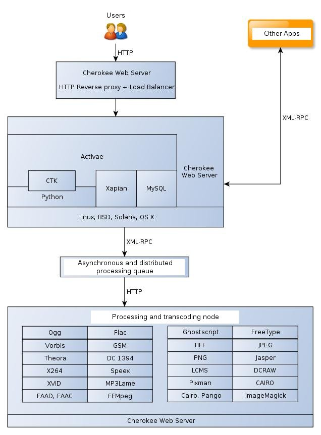
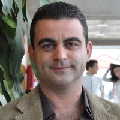

Activae: towards a free and community-based platform for digital asset management
Abstract
Every day, more businesses, organizations, and institutions of all kinds generate media assets that become part of their value chains, their know-how and production processes. We understand a multimedia digital asset not only as a media file (audio, video, or image) but as the combination of the file itself and its associated metadata; this allows, from an organizational perspective, exploiting, analysis, and documentation.
About Activae project
From this perspective, it is essential that organizations have platforms that allow the management of multimedia assets. There are several platforms of this kind on the market [1]: Canto Cumulus, Artesia DAM, Fuzion Media Asset Management, Nuexeo DAM, and others. However, the number of simple and scalable platforms based on open source software is not remarkable and that is why CENATIC [2] (Spanish National Competence Center for the Application of Open Source Technologies) has developed Activae [3]; a platform for digital and multimedia asset management that is highly scalable, open source, vendor-independent, fully developed in Python, and designed for the Ubuntu Server.

If we were to list the features of activae according to their importance, these would be [4]:
- Scalability: Activae consists of four modules: transcoding, data access, web frontend, and an API exported via XML/RPC. Each one of them allows load balancing and high availability, so the scalability possibilities are broad. It can all run on one machine or additional machines can be arranged as required. If the use of the platform requires more storage, you can easily hot-plug it. If you use a lot of transcoding of multimedia formats, machines can be dedicated specifically to this work and even more can be added as you see the need.
- Load balancing: is provided by the internal engine of the platform, the Cherokee web server [5]. Access to the application can be configured in this way to provide service in those cases where visitors to the platform are abundant.
- Transcoding: Activae allows advanced format transcoding in the platform itself. If, for example, a video asset having DivX AVI format is added, it can be transformed seamlessly into a video MPEG H.264, or FLV to web. You can even convert a video to an MP3; Activae is responsible for automatically eliminating the video layer and extracting the audio. It supports transcoding between 200 different formats/containers, and most importantly, the transcoding is done asynchronously - decoupled and detached (in the background) while you can continue working with Activae. It is a non-blocking process.
- 100% AJAX GUI: provided by the CTK library [6] (Cherokee Tool Kit), a jQuery wrapper written in Python that allows the development of advanced, light and professional user interfaces.
- The platform is fully developed in Python 2.5, familiar to many readers: the API that is exported via XML/RPC, the AJAX user interface, the control and business logic, the database access, etc...
- It is open source. Activae is licensed under the New BSD License terms. This allows modification, use, distribution, sale, or relicensing, which is an advantage to any individual, company, or organization that wishes to use their properties for personal use or to provide services to third parties, expanding its portfolio of products and services and ultimately expanding their business opportunities.
As for the technical soundness of the platform, it is ensured by being based on renowned open source components: Xapian, Cherokee, Python, ImageMagick, FFMpeg, etc. The following figure shows more specifically the modules that are used by Activae, how they are interconnected, and how it used each one of them.
Model of community and government
The project is currently housed in the Forge of CENATIC [7] . For now, the CENATIC staff is managing its evolution, although we are completely open to incorporate more participants: the more players, the better. Workers from companies such as Octality [8] and ATOS Origin [9] are involved in the process; various developers and beta testers of other entities are conducting pilot projects to deploy the platform (museums, universities, television networks, associations, media companies, ...)
The development model used is the "rolling release". That is, there is no single development branch constantly being evolved. Stable packages that contain highly tested features are released on a frequent basis. To the extent that the merits of the developers dictate, they go on to have enough permissions to manage their own community around the platform. No one is excluded on grounds of origin, sex, race, age, or ideology. The community is a meritocracy: open, flexible, and dynamic, with the main goal of changing the product for the benefit of all.
Call for participation
The project has been released very recently. This implies that the user and developer community around the platform is still small, although the growth rate is quite high. Therefore, CENATIC calls for the participation in the project to all Python developers of the open source community that want to be part of an innovative and forward-looking project. The way to get started is to sign up in the Forge of CENATIC and request to join the project. But you can also work anonymously downloading the sources via Subversion platform.
svn checkout https://svn.forge.morfeo-project.org/activae/dam
All necessary information for participation can be found in the project Wiki [10]. Any input is welcome: developers, translators, graphic designers, beta testers, distributors... or just providing ideas for improvements or future features. Although the website is currently available only in Spanish, we are working hard to get the English version up as soon as possible. In any case, the internal documentation of the source code as well as the comments for each commit are completely written in English.
About CENATIC
CENATIC is the Spanish National Competence Center for the Application of Open source Technologies. It is a public foundation, promoted by the Ministry of Industry, Tourism, and Commerce of the Spanish Government (through the Secretary of State for Telecommunications and Information Society and the public entity red.es) and the Extremadura Regional Government. Members of the Board are also the Regional Governments of Andalusia, Asturias, Aragon, Cantabria, Catalonia, the Balearic Islands, and the Basque Country, as well as the Atos Origin, Telefonica and GPEX companies.
CENATIC's mission is to promote knowledge and use of open source software in all areas of society, with special attention to government, businesses, the ICT sector - providers or users of open source technologies - and development communities. In addition, the established Spanish regulatory framework corresponds to CENATIC general advice on legal issues, technology, and methodology most appropriate for the release of software and knowledge.
Related links and references
- [1] http://www.opensourcedigitalassetmanagement.org/reviews/available-open-source-dam/
- [2] http://www.cenatic.es
- [3] http://activae.cenatic.es
- [4] Activae, el gestor de activos digitales y multimedia. M. Dominguez-Dorado, Isabel San Jose Pelaez. Todo Linux 121. Pages. 10-14. Iberprensa press (Madrid). DL M-39535-2000. December, 2010.
- [5] http://www.cherokee-project.com
- [6] http://svn.cherokee-project.com/browser/CTK
- [7] http://forja.cenatic.es/projects/activae
- [8] http://www.octality.com
- [9] http://www.es.atosorigin.com/es-es/
- [10] http://activae.cenatic.es/wiki/index.php/Main_Page
| Share |

|
Talkback: Discuss this article with The Answer Gang

Manuel Domínguez-Dorado was born in Zafra, Extremadura (SPAIN) and he completed his studies at the Polytechnic School of Cáceres (University of Extremadura) where he received the Computer Engineering and Diploma in Computer Science in 2004 and 2006, respectively. He worked for several companies in the ICT sector before returning back to the University of Extremadura as a researcher. In 2007, he obtained a Certificate of Research Proficiency. Nowadays he works for CENATIC (Spanish National Competence Center for the Application of open source technologies) as Project Management Office (PMO) lead while complete his doctoral thesis. His areas of interest include multiprotocol technologies, interdomain routing and interdomain Path Computation Element (PCE) enviroments, as well as the work of planning, coordination, measurement and management in large-scale software projects.